IMDb Top 250 Movies
1. The Shawshank Redemption
Year of release: 1994
Running time: 2h 22m
Parental guide: R
Rating: 9.3 from 3M votes
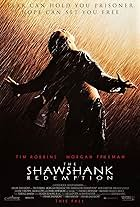
2. The Godfather
Year of release: 1972
Running time: 2h 55m
Parental guide: R
Rating: 9.2 from 2.1M votes
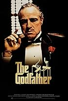
3. The Dark Knight
Year of release: 2008
Running time: 2h 32m
Parental guide: PG-13
Rating: 9.0 from 2.9M votes
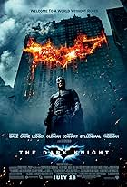
4. The Godfather Part II
Year of release: 1974
Running time: 3h 22m
Parental guide: R
Rating: 9.0 from 1.4M votes
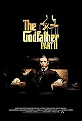
5. 12 Angry Men
Year of release: 1957
Running time: 1h 36m
Parental guide: Approved
Rating: 9.0 from 889K votes
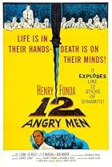
6. The Lord of the Rings: The Return of the King
Year of release: 2003
Running time: 3h 21m
Parental guide: PG-13
Rating: 9.0 from 2M votes
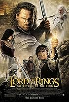
7. Schindler's List
Year of release: 1993
Running time: 3h 15m
Parental guide: R
Rating: 9.0 from 1.5M votes
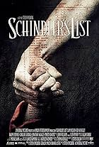
8. Pulp Fiction
Year of release: 1994
Running time: 2h 34m
Parental guide: R
Rating: 8.9 from 2.3M votes
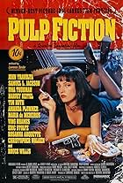
9. The Lord of the Rings: The Fellowship of the Ring
Year of release: 2001
Running time: 2h 58m
Parental guide: PG-13
Rating: 8.9 from 2.1M votes
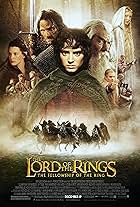
10. The Good, the Bad and the Ugly
Year of release: 1966
Running time: 2h 58m
Parental guide: R
Rating: 8.8 from 828K votes
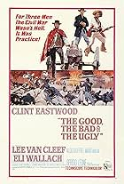
11. Forrest Gump
Year of release: 1994
Running time: 2h 22m
Parental guide: PG-13
Rating: 8.8 from 2.3M votes
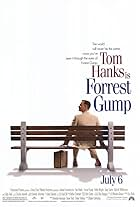
12. The Lord of the Rings: The Two Towers
Year of release: 2002
Running time: 2h 59m
Parental guide: PG-13
Rating: 8.8 from 1.8M votes
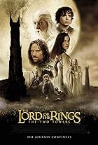
13. Fight Club
Year of release: 1999
Running time: 2h 19m
Parental guide: R
Rating: 8.8 from 2.4M votes
14. Inception
Year of release: 2010
Running time: 2h 28m
Parental guide: PG-13
Rating: 8.8 from 2.6M votes
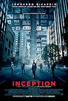
15. Star Wars: Episode V - The Empire Strikes Back
Year of release: 1980
Running time: 2h 4m
Parental guide: PG
Rating: 8.7 from 1.4M votes
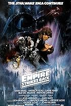
16. The Matrix
Year of release: 1999
Running time: 2h 16m
Parental guide: R
Rating: 8.7 from 2.1M votes
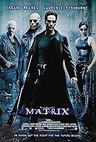
17. Goodfellas
Year of release: 1990
Running time: 2h 25m
Parental guide: R
Rating: 8.7 from 1.3M votes
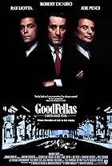
18. One Flew Over the Cuckoo's Nest
Year of release: 1975
Running time: 2h 13m
Parental guide: R
Rating: 8.7 from 1.1M votes
19. Interstellar
Year of release: 2014
Running time: 2h 49m
Parental guide: PG-13
Rating: 8.7 from 2.2M votes
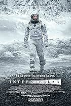
20. Se7en
Year of release: 1995
Running time: 2h 7m
Parental guide: R
Rating: 8.6 from 1.8M votes
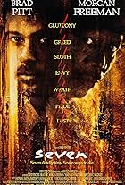
21. It's a Wonderful Life
Year of release: 1946
Running time: 2h 10m
Parental guide: PG
Rating: 8.6 from 507K votes
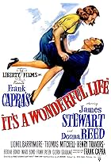
22. Seven Samurai
Year of release: 1954
Running time: 3h 27m
Parental guide: Not Rated
Rating: 8.6 from 374K votes
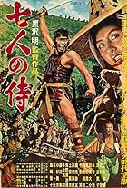
23. The Silence of the Lambs
Year of release: 1991
Running time: 1h 58m
Parental guide: R
Rating: 8.6 from 1.6M votes
24. Saving Private Ryan
Year of release: 1998
Running time: 2h 49m
Parental guide: R
Rating: 8.6 from 1.5M votes
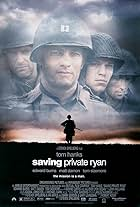
25. City of God
Year of release: 2002
Running time: 2h 10m
Parental guide: R
Rating: 8.6 from 816K votes
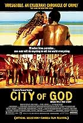